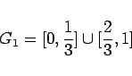
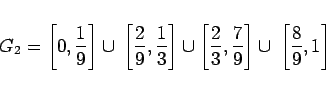
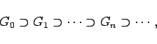
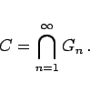

Inhalt Index DeskTop Bronstein

 Dynamische Systeme und Chaos Quantitative Beschreibung von Attraktoren Dimensionen Metrische Dimensionen
Dynamische Systeme und Chaos Quantitative Beschreibung von Attraktoren Dimensionen Metrische Dimensionen


Attraktoren oder andere invariante Mengen von dynamischen Systemen können geometrisch komplizierter als Punkt, Linie oder Torus aufgebaut sein. Fraktale sind, auch unabhängig von einer Dynamik, Mengen, die sich durch eines oder mehrere Merkmale wie Ausfransung, Porösität, Komplexität, Selbstähnlichkeit auszeichnen. Da der übliche Dimensionsbegriff, wie er für glatte Flächen und Kurven gebraucht wird, für Fraktale nicht anwendbar ist, müssen verallgemeinerte Definitionen der Dimension herangezogen werden. Eine ausführlichere Darstellung der Dimensionstheorie s. Lit. 17.8, 17.20.
| Beispiel |
|
Das Intervall G0 =[0,1] wird in drei Teilintervalle gleicher Länge geteilt und das mittlere offene Drittel entfernt, so daß die Menge 



|